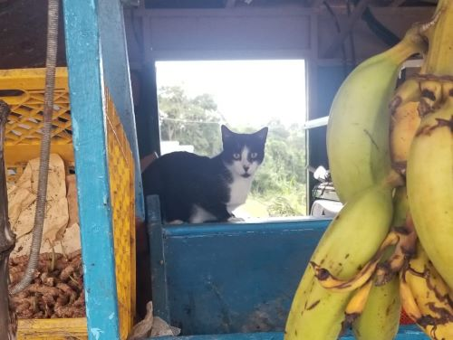
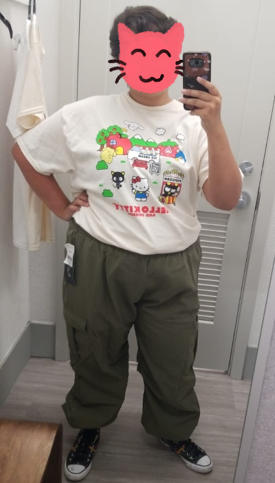
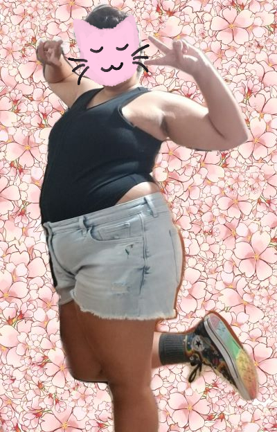
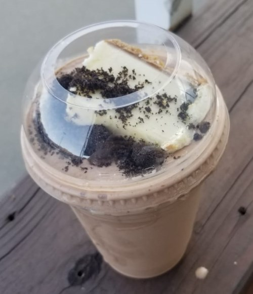
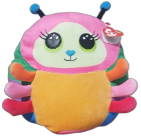
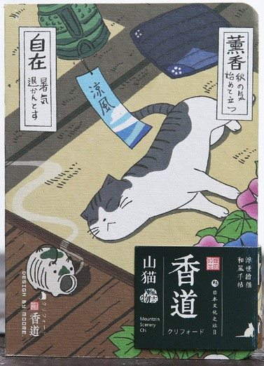

mini update 23.sep.23
hi everyone! just wanted to give yall some updates! im working on a couple of pages (including ones that have been in the making for the past month or so...) which is why there hasn't been a lot going on in my site at the moment. i've also been a bit occupied with real life believe it or not!
i think i am starting to get my shit together... doing some research and all of that so i can start my uni studies once again! im a bit scared but i am also pretty excited for whats about to come. it feels like i am doing progress.
i'm STILL working on my fav albums page. slowly but surely doing a progress with that one! i want to write as much as i can about why these albums mean so much to me which is why its taking such a long time to finish. i've also discovered that i'm just a pretty slow writer overall  it takes me a while to organize my thoughts so that also probably it as well
it takes me a while to organize my thoughts so that also probably it as well
i've also decided to put my CD collection in to a seperate page rather than being together with my fav albums. i think this will make it look less crowded. and much nicer too. it also has a diffent layout than my fav albums since i don't plan on using javascript for this one. hovering the album covers will give you all the info you need!
another page i've been working on is my photobook! been meaning to make this page SINCE the creation of my site. i created it from scratch and as you will notice, it has a similar layout to the CD collection page! trying to figure out how to have the caption boxes inside of the pics was a bit of a trial and error situation but at the end i managed to make it work!! it's a very nice feeling when something like that happens.
i also have 2 listens to log: loossemble's self titled ep and yeule's softscars. i feel like before i just to gave out quick comments on the things that i listened to on my listening log. but recently, i've been meaning to make my logs over there a bit more fleshed out compared to how i was previous times. which is why i can't publish these the same day i listen to them, because it takes a while to write them!
i've been meaning to start working on v3 of my homepage for a while now! i have an idea of what i want to do. but first, i want to finish these things so i can move on to working on that. honestly i try to not work on a lot of stuff at the same time so i don't get overwhelmed, but i also tend to get a bit overburned if i work on a single thing for weeks. but i think i've found a pretty good balance for this problem :)
i think that concludes my mini update. i went to buy some plantains yesterday and this guy greeted me

so polite!
hungry... gonna eat breakfast soon!
happier lately + other bits 18.sep.23

a department store recently opened that is reletively close to where i live and i decided to check it out!
i was able to find a SUPER cute hello kitty shirt, and these baggy pants. i have been in search for some baggy pants for MONTHS now, and i was so happy i was able to find these at a decent price AND that fit me very nicely!!!!
i always find it so hard to find nice and cute clothes that fit me when i go to shops, since i don't like shopping online for clothes. so i am SUPER happy with this find!

this is the fit i wore that day i went shopping, really like it :3 specially the black bodysuit shirt ?? i hope its called that but whatever we ball. i recently found some in a store and bought a couple. they are so nice.
lately, i've just been feeling more confident in myself and the clothes i like to wear :) it's really nice to just stop giving a fuck sometimes. and i think this has to do with the fact that not long ago i came to terms with my gender identity and expression!
for a while, i had known that i don't exactly feel like a "girl", but i wasn't exactly sure how to describe my relationship with gender with just a word or two. its a bit complicated. but right now i'm fine with calling myself nonbinary :) and that makes me happy. it feels pretty freeing in a way... that i don't have to conform to something that i don't want to be.
i don't wanna jinx it, but just overall, i've been feeling... happier  i think i have somewhat of an idea as to what i wanna do with my life after speding the past 3 years or so in a limbo not knowing what to do. or i guess at least now i know where i want to start at, since i don't have everything planned out. but thats okay. before, i was just following along what people told me that i "should" be doing. now, i want to take better control of my life. and make the best out of it while i'm still here! that is my new goal.
i think i have somewhat of an idea as to what i wanna do with my life after speding the past 3 years or so in a limbo not knowing what to do. or i guess at least now i know where i want to start at, since i don't have everything planned out. but thats okay. before, i was just following along what people told me that i "should" be doing. now, i want to take better control of my life. and make the best out of it while i'm still here! that is my new goal.


i also stopped at my fav frappé place after being that hello kitty shirt and pants. i ordered a nutella one with a fucking cheesecake on the top?!? i had a bit of trouble eating the cheesecake since i forgot to ask for a spoon (LMAO) but it was so delicious!!! 
i also found a new friend! saw her at the pharmacy and she was so weird and adorable i just had to take her. which also reminded me i have a whole plushies page to make... someday!
anyway, her name is nessa and she came with a little poem and her birthday, as these ty plushies usually do. when i read her's i actually got a bit emotional so i want to share it here and close today's log with it!
you can see magic all around you if you try.
like the colorful wings of a butterfly.
just be yourself, there's nothing to hide.
everyone's special on the inside.
cheerful
xenoblade chronicles
rest in peace, ps4 14.sep.23
well. its over 
i replaced the ps4's antenna in hopes that would fix its issues with the wifi / bluetooth connection but nope. none of my controllers want to connect to it. sigh... id love to check if it's able to connect to the wifi but i CAN'T because i can't get past the start up menu... WHICH I NEED MY CONTROLLER FOR!!
man :( i talked about this on a previous log entry titled "7 year old ps4" but despite not playing as much as i did before, my ps4 was my main way of playing video games without making my laptop or switch lite suffer. and i do not have any money or even a job (as im struggling to find one lol) to buy a next gen console. so that kinda sucks. i was really liking bloodborne too, since that was the only game i was playing at the moment on my ps4. i guess i'll finish it someday in the far FAR future.
a bit down
adventure time season 4
rice, chicken wigs, fried plantains
pretty nice 03.sep.23
yesterday i bought some cheap car washing stuff. so today i managed to get up early and wash my car  everyone please clap! that car has not been washed in the past 2 years and it needed a REALLY good cleanup. took me like 3 good hours. but i am very happy that i did so! this feels like a huge accomplishment to me and you know what? i'll take it!!!
everyone please clap! that car has not been washed in the past 2 years and it needed a REALLY good cleanup. took me like 3 good hours. but i am very happy that i did so! this feels like a huge accomplishment to me and you know what? i'll take it!!! 
i've been waking up a whole lot earlier recently as well! and making myself delicious breakfasts. i love breakfast. so im happy for that as well
i started watching that fionna and cake spinoff show too. i've been meaning to watch adventure time first tho... but since i noticed fionna and cake is gonna be a weekly thing i've been watching adventure time as well while i wait for the new episodes. and man. does it take me back!!! i kinda miss those days. i'm on season 1 episode 13 so far and i've been having a lot of fun it. mostly watching while im doing the dishes tho BUT IM PAYING attention i promise. i missed finn and jake a bit from my teen years 
the past couple of days have been pretty nice for me all things considered. i hope it keeps being that way for a while
pretty alright
adventure time
an unexpected journey while buying a new journal 02.sep.23
yesterday i woke up weirdly missing my bullet journal days... which is pretty weird for me given how self-aware i am about the fact that bullet journals don't work for me because all i care about is decorating the pages 
anyway, i was actually writing a log about the different journals and planners i've had over the years but it got pretty long (and im not even done lol) so i will leave it for a blog post in the future! （。＾▽＾）
since the start of 2023, i haven't really done much journaling with paper + pen (for reasons i will discuss on future blog post) so i wanted to start fresh and get a new notebook so i could get back on track! as i was searching for notebooks and journals that i could use for my journaling, i found this SUPER cute one!
i got really curious about the illustration because i genuinely love it so much so i did some digging with google images trying to find the original source of this illustration so i could find the artist's name and see more of their work!
while looking for some sort of source through google lens (horrible btw i need to look for another reverse img search engine) i stumbled upon what looked like a japanese website and i said to myself okay this HAS to be it, and it was!!!! 
 disclaimer: the info im about to talk about was machine translated, sorry for any errors (ノへ￣、)
disclaimer: the info im about to talk about was machine translated, sorry for any errors (ノへ￣、)
i was able to find the original source of the picture japanese online shop called wadouraku.co.jp that specializes in selling stylized postcards and message cards!!! this shop was so so lovely to browse. my favorite part is that the site features a catalog of postcards with beautiful illustrations made by different artists! accdording to site's description, they have 70 affiliated illustrators and each of them has their own page with a little bio section while also showcasing the art they have made for the products. i really recommend checking the site out if you want some art insp cus i genuinely found this to be so cool. i love postcards.
.jpg "click to go to postcard's page") the person who illustrated the cute cat cover i shared above is こばやしゆみこ / yumiko kobayashi! as i was browsing through her shop page, i found her bio to be so sweet
the person who illustrated the cute cat cover i shared above is こばやしゆみこ / yumiko kobayashi! as i was browsing through her shop page, i found her bio to be so sweet 
yumiko worked for an animation production company. later in 2007 she started working as an illustrator. she had an interest in drawing since she was a child. when describing her inspirations she mentions other people's works, her own experiences, books, movies, and more. her favorite painter is utagawa kuniyoshi
.jpg "click to go to postcard's page") here's a machine-translated excerpt from her bio that i found very heartwarming
here's a machine-translated excerpt from her bio that i found very heartwarming
"I try to create a world that is enjoyable for the viewer. It is my greatest pleasure when I am able to give form to my thoughts.
I am very happy when I can give shape to what I have in my mind."
original japanese text
心がけています。 思った事が形にできた時が何よりの
喜びです。
let me tell you, as i was browsing her catalog, my smile was so big her illustrations are just so fun and colorful and so full of life!!!! i was in awe the entire time. i know i am a bit biased when it comes to cats but i am IN LOVE with her work. my fav series of hers are her cat seasons postcards where she illustrated a postcard for each month of the year showcasing cats doing various activities according to the month! its so cuteeee.
.jpg "click to go to postcard's page")
.jpg "click to go to postcard's page")
.jpg "click to go to postcard's page")
here are some other ones from her catalog that i love as well!
.jpg "click to go to postcard's page")
.jpg "click to go to postcard's page")
.jpg "click to go to postcard's page")
and i have SO much more illustrations that i absolutely love but for now i will just share these! please go to her page and check her illustrations! it brought a smile to my face. i would do anything to get my hands on these postcards but the shop doesn't seem to ship worldwide  i would also try to contact the shop and ask but i honestly prefer death than to write them a msg with a machine translator UGHHHH. i really need start learning japanese someday
i would also try to contact the shop and ask but i honestly prefer death than to write them a msg with a machine translator UGHHHH. i really need start learning japanese someday
and i hope こばやしゆみこ is having the best day ever. thank you for your art. really wanna print some of these for my own personal use and hang em up on my room. i look at these and i just can't help but smile
anyway back to buying stationary... i also bought a really cute tulip pen the past week alongside some gel ink pen refills and i can't wait for it to arrive! i'll def share a pic here when it does!

site news: i mentioned this on my neocities profile but i am currently working on a new blog post about vocaloid!!! in (VERY LATE...) celebration of hatsune miku's birthday :3 it should be posted sometime this week
hungry...